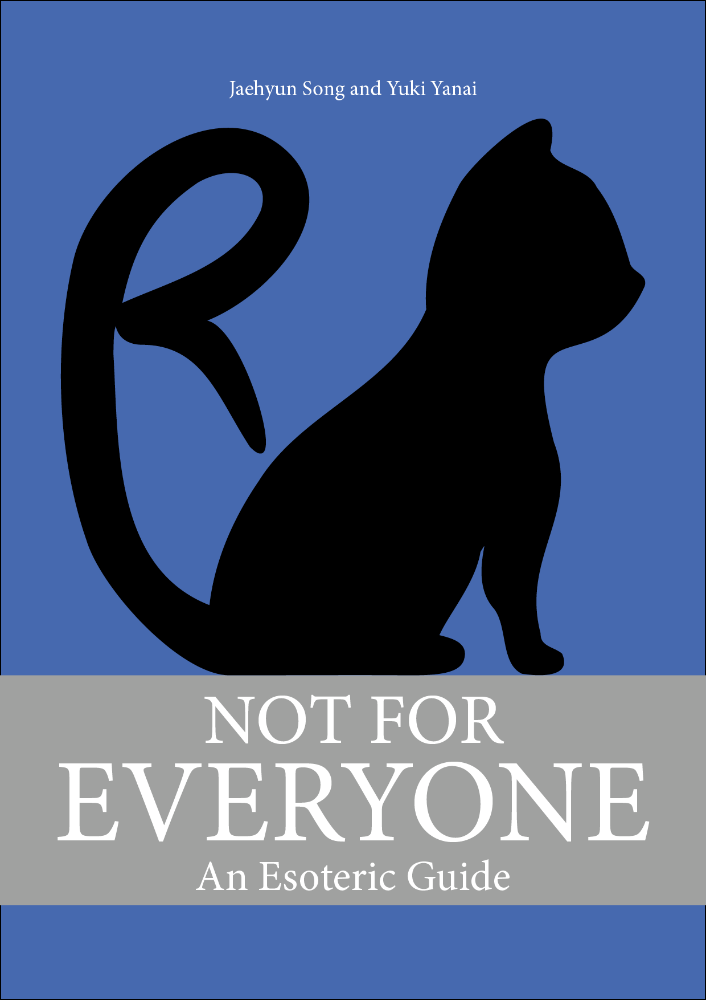
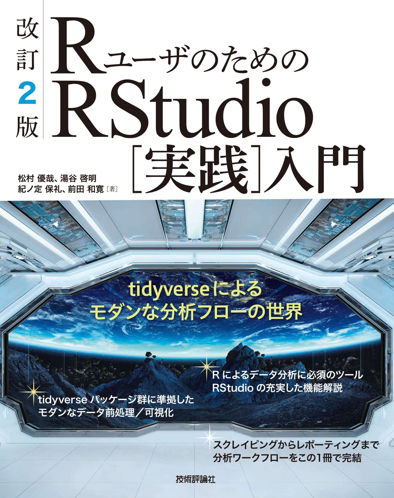

ミクロ政治データ分析実習
第1回 ガイダンス
宋 財泫
関西大学総合情報学部
2024-04-11
講義概要
- 講義日：木曜日 第4時限（14:40～16:10）
- 場所：TC302教室（高槻キャンパス C棟 302教室）
- 講義内容: Rの使い方
- Rの基本的な操作 & Quarto
- データの入出力
- データのハンドリング（前処理）
- データの可視化
- 統計学、確率、多変量解析、因果推論の授業ではない。
- データ分析の手法は後期の「マクロ政治データ分析実習」
- 後期の授業ではRの使い方について解説しない。
- 到達目標：Rを用いたデータ分析の教科書が読める土台づくり
講義内容（予定）
- 第1回 イントロダクション
- 第2回 RとIDEの導入
- 第3回 Rの基本的な操作
- 第4回 プログラミングの基本的な概念
- 第5回 Quartoと再現可能な研究
- 第6回 データ収集
- 第7回 データ型
- 第8回 データ構造
- 第9回 データハンドリング（1）
- 第10回 データハンドリング（2）
- 第11回 データハンドリング（3）
- 第12回 可視化（1）
- 第13回 可視化（2）
- 第14回 可視化（3）
- 第15回 期末テスト
参考) 「マクロ政治データ分析実習」の内容（予定）
- リサーチデザイン
- 記述統計
- 統計的推定
- 統計的仮説検定
- 変数間の関係（\(t\)検定、\(\chi^2\)検定、相関分析）
- 線形回帰分析
- 交互作用
- ロジスティック回帰分析
- 分析結果の可視化
ミクロ政治とマクロ政治
データの分析単位として「ミクロ」と「マクロ」
- ミクロデータ（個票データ）
- 主に個人データ（いわゆる世論調査データ）
- マクロデータ（集計データ）
- 国家、市区町村、選挙区など
- ミクロにおける主体（たとえば、人）の集合
分析における「ミクロ」と「マクロ」
- 「ミクロ」のための手法、「マクロ」のための手法の区別はほぼない
- ほとんどぼ分析手法はミクロ、マクロ区別なく使用
- 計量分析のツールとしてのR：敷居が高い
- \(\Rightarrow\)「ミクロ政治データ分析実習」で学習
- ツールの使い方を習得から具体的な分析手法へ
- \(\Rightarrow\)「マクロ政治データ分析実習」で学習
前提知識
教科書
宋財泫・矢内勇生.『私たちのR: ベストプラクティスの探求』Web-book
- 本講義内容を全てカバーする
- 本講義と教科書の関係はシラバスを参照
- 無料 (https://www.jaysong.net/RBook)

参考書
- 松村優哉 他. 2021. 『改訂2版 RユーザのためのRStudio[実践]入門』技術評論社
- Garrett Grolemund and Hadley Wickham. 2017. R for Data Science. O’Reilly.
- 邦訳『Rではじめるデータサイエンス』(原著は無料: https://r4ds.had.co.nz/)
- Jared P. Lander. 2018. R for Everyone. Addison-Wesley Professional.
- 邦訳『みんなのR』


成績評価
- 欠席4回以上は評価の対象外（3回まで評価対象）
- 出欠はカードリーダーを使用するため、学生証を必ず持参すること
- 30分以上遅刻は出席0.5回扱い/60分以上遅刻は欠席
- 欠席届を提出した場合は出席扱い（事前連絡/報告は不要）
- 事前連絡の有無と関係なく、欠席届があれば出席扱いとなり、提出しない場合は欠席扱い
- 計5〜6回の課題を予定
- 未提出3回以上は不可（未提出2回まで評価対象）
- 評価の対象 \(\neq\) 単位がもらえる
- 課題提出期限の延長はない (提出までの期間が長めであるため)
- 提出期限は次回講義の前日23時59分まで
- 期限内に提出出来なかった場合でも宋に連絡する必要はない（どうせ延ばしてくれない）。
- 不正行為厳禁
- 第15回の授業内 + 持ち帰りで期末レポートを執筆
- 授業内で完成した分を提出し、残りを持ち帰りで執筆して再提出。
- 90分内に全問の3分の1以上は解答すること
- 持ち帰り分の解答は減点
- 授業内で完成した分を提出し、残りを持ち帰りで執筆して再提出。
- 未提出者は不可
- 不正行為厳禁
オフィス・アワー
宋、またはTAが研究室に待機し、事前予約なしに相談、質問などが可能な時間
- 毎週月曜日3限（13時00分〜14時30分）
- 宋が対応
- 毎週木曜日3・5限（13時00分〜14時30分/16時20分〜17時50分）
- 宋とTAが対応
- 場所：TA227研究室（A棟の2階）
授業時間外のフィードバックについて
- オフィス・アワー以外のフィードバック方法
- 対面（推奨）
- 事前予約が必要（LMS、メール、対面、Discord等）
- メール: song@kansai-u.ac.jp
- Discord（推奨）
- Discordでフィードバックを受けたい場合は、LMSメッセージで宋に自分のDiscord IDを伝えること。
- 対面（推奨）
- LMS、メッセージ、メールの質問は受け付けない。
- 効率が悪すぎる。
- 質問は平日9〜17時（宋の勤務時間）を推奨
- 週末、平日17時以降も受け付けるが、返信まで数時間、数日かかる。
課題
課題の遂行有無は確認しない（履修者の良心に任せる）。